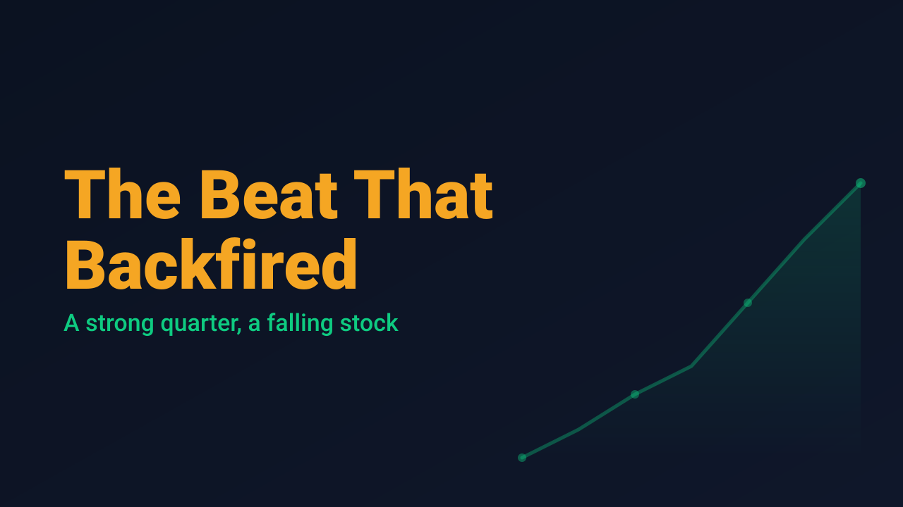
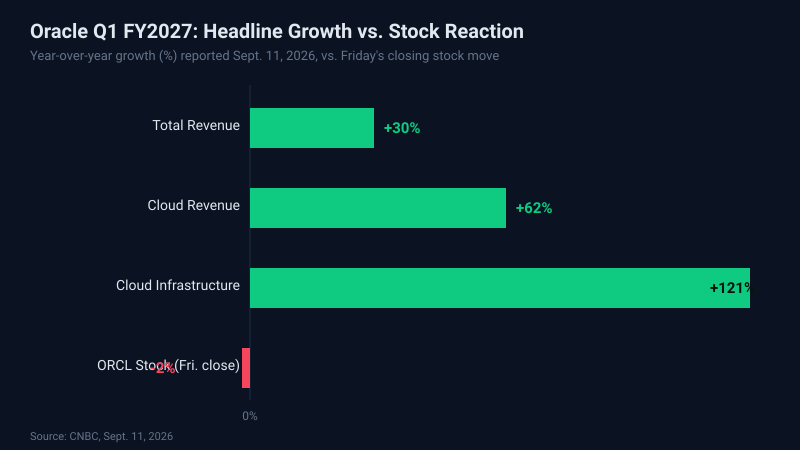

Oracle Beat Every Estimate Friday. Its Stock Fell Anyway.

Oracle delivered the kind of quarter that is supposed to send a stock higher: revenue up 30% year over year, adjusted earnings ahead of estimates, and cloud infrastructure growth so steep it is easy to miss on a chart with a normal scale. Instead, the stock popped at Friday's open, gave the gain back over the session, and closed down roughly 2%. For a market obsessed with AI infrastructure spending, that reaction is the more interesting data point than the headline growth numbers themselves.
The details of the beat are real. Oracle's fiscal first quarter revenue came in at $19.3 billion versus the $19.13 billion Wall Street expected, with adjusted earnings per share of $1.92 against a $1.75 estimate. Cloud revenue rose 62% year over year to $11.61 billion, and cloud infrastructure revenue, the line item most tied to the AI buildout, jumped 121%. The company also brought 850 megawatts of new data center capacity online during the quarter, a concrete sign that the demand story is not just a sales pitch.

What the top-line numbers do not show up front is the cost of getting there. Gross margin fell to 61%, down sharply from 66.3% the prior quarter, as capital expenditures jumped to $28.5 billion from $8.5 billion a year earlier. Free cash flow was negative $5.4 billion, compared with negative $362 million in the same quarter last year, and total debt now sits at $125 billion. None of that shows up in a revenue growth headline, but all of it showed up in Friday's price action once traders had a few hours to read past the press release.
Options activity told a similar story before the numbers even hit the tape. Oracle's 30-day implied volatility was running near 52 heading into the print, with calls outnumbering puts by roughly 2.4 to 1 and open interest concentrated in October 165-strike calls, a lopsided setup that left little room for anything short of a flawless report. The broader market closed higher regardless: the Dow gained 509 points (0.98%) to 52,573.29, the S&P 500 rose 0.86% to 7,656.98, and the Nasdaq added 0.96% to 26,333.04, even after August core CPI came in hotter than expected at 2.4% annually. A pullback in oil, which slid to $100.05 a barrel after a two-week surge tied to Middle East supply fears, gave indices room to grind higher despite the inflation print. Underneath that calm, U.S. equity funds have shed $14.2 billion over the past three weeks, the largest outflow since January, a sign the rally is being driven more by a lack of aggressive selling than by fresh buying.
Earnings season rewards traders who can separate a good headline from a good setup, and Friday's Oracle reaction is a clean example of the gap between the two. The stock's growth numbers were not the problem; the price paid for that growth, in margin, cash flow, and leverage, was the problem. That distinction, more than any single percentage figure, tends to separate a swing trade that works from one that gets stopped out on the same information.